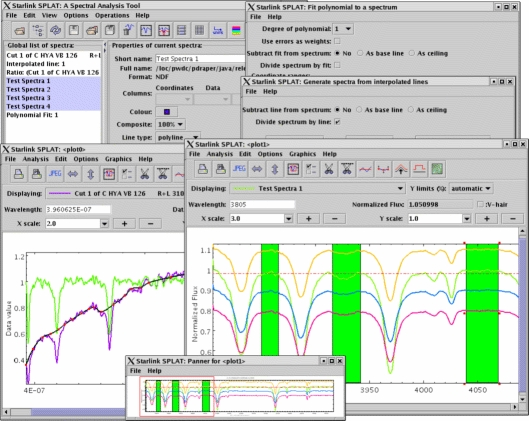

Next: Abstract
SPLAT-VO - A VO-enabled Spectral Analysis Tool

Starlink User Note 243.12
Peter W. Draper
17 Feburary 2006
 Retrieve hardcopy
Retrieve hardcopy
Contents
Next: Abstract
SPLAT-VO -- A VO-enabled Spectral Analysis Tool
Starlink User Note 243
Peter W. Draper
17 Feburary 2006
E-mail:splat@star.rl.ac.uk
Copyright © 2001-2005 Council for the Central Laboratory of the
Research Councils \& \
2006 Particle Physics and Astronomy Research Council